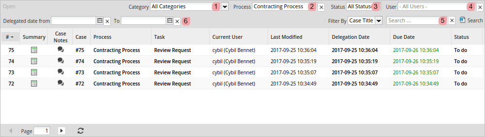
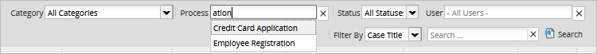
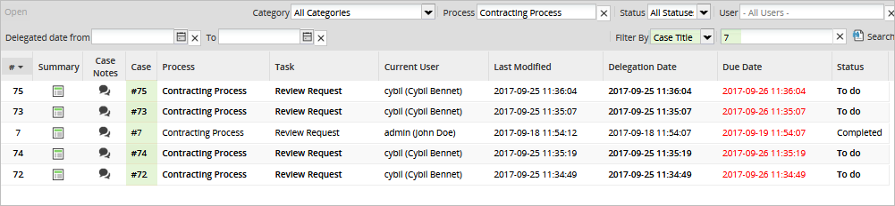
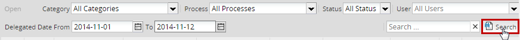
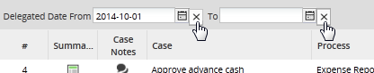
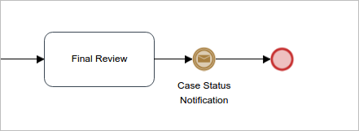
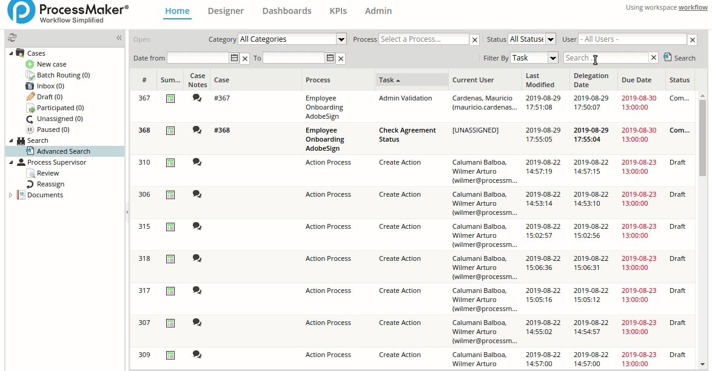

Search
To access the Search section, the user must have the PM_CASES and PM_ALLCASES permissions assigned to their role.

Advanced Search
The Advanced Search submenu is available for users with the PM_ALLCASES permission in their role. This menu displays all the cases in the workspace and allows users to search for cases using the following criteria:

Warning: The statuses in the Status column display the case status, NOT the task status.
-
Category: Select a process category. Only cases of processes of the process category selected will be listed.
If you change the category, the process field will reset and it will only provide the processes within the respective category.
Note: If you only select a category and not a process, the search will not show any result, it is necessary to select a process in order to display the cases.
-
Process: Enter the name of a process. This field has an autocomplete feature, which lists all the processes matching cases.

It will only display the processes that are involved in the category previously mentioned.
-
Status: View cases with all statuses or filter the results by a specific status, such as Draft, To Do, Completed and Canceled.

-
User: View the cases assigned to a specific user. This field displays a suggestion field with an autocomplete feature. All coincidences displays as the text is entered.

A search can be done with one or more search criteria at the same time.
-
Search: Search a specific word in the case number, case title or task name columns by entering it into the search box, as shown in the image below:

Enter the search term and click Search. For example, searching for a case number:

If you type
0, no matter if you filter by Case Number, Case Title or Task, the search perform all cases. -
Filter By: As of ProcessMaker 3.2.2, this field is available to define the column, such as Case Number, Case Title or Task, and where the search of the text entered in the Search field is performed.
Note: Take into account the following about the Case Title:
- As of ProcessMaker 3.4.0, the Case Title uses full-text search techniques to find case data in a workspace. For more information about the full-text stopwords and restrictions of MySQL 5.7, see Full-Text Stopwords and Full-Text Restrictions.
- As of ProcessMaker 3.4.11, the full-text search techniques can be disabled by setting
disable_advanced_search_case_title_fulltextin the env.ini file, however, it is not recommended for full load environments because this setting affects performance.

-
Delegate Date From and To: Search for cases that were last routed (delegated) to the current task between specific dates.

Click on to select a date. After selecting the dates, click on to display the results.

Click on the X button next to the Delegate Date From and To fields to clear the dates selected.

Progress Indicator
Available Version: As of ProcessMaker 3.3.12
When the search is being performed, a progress indicator displays on the screen.

If the search takes longer than 2 seconds, the following message displays:

When the search displays an error or it does time out, the following messages display:
-
“An unexpected error occurred while searching for your results. Error Code {HTTP status Code}” and “please contact your administrator.”

-
“Your search timed out.”

If an error occurs and it is not classified, the message error displays: “An unexpected error occurred while searching for your results. Please contact your administrator.”
Case Scenarios
In the following table, there is an explanation of what a user can expect when accessing the Advanced Search option in different scenarios:
| # | Case Status | Case Flow | Result |
|---|---|---|---|
| 1 | The case is open or active. | Only one flow is active. | The current case flow is displayed in the list. |
| 2 | More than one flow is active. | Active case flows are displayed in the list. | |
| 3 | Some flows are open and other flows are completed (at the end event). | Active case flows are displayed in the list. Complete case threads are NOT displayed in the list. |
|
| 4 | The case is completed. | The case is completed with only one end event. | The last task before the end event is displayed in the list. |
| 5 | The case is completed with more than one end event. | Only the last task before one end event is displayed in the list. | |
| 6 | The case is completed (special case) | The last element before the end event of the case is an element that does NOT require user intervention. | The element before the end event is displayed in the list. See the example below. |
The special case (#6) includes a process like the one in the image below:

Once completed, the process above will be listed in the Advanced Search option with its last element. In this case with an intermediate email event.

Save Filter
As of ProcessMaker 3.4.0, regular cases and cases summaries opened from the Advanced Search have the option to go back to the Advanced Search with the filter previously used, otherwise it returns to the Advanced Search without filters. The customized filter is saved per user.
|  |